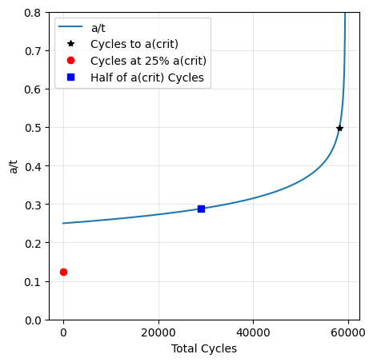
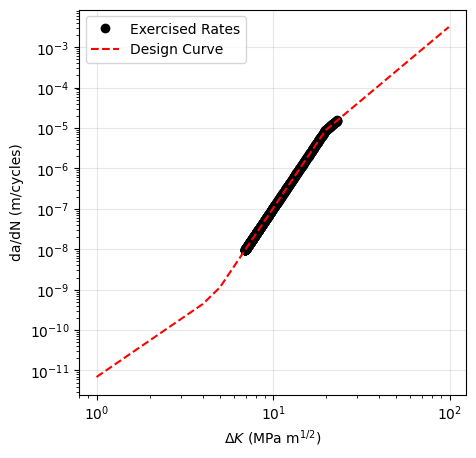
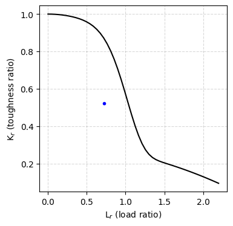

[1]:
%matplotlib inline
%load_ext autoreload
%autoreload 2
[2]:
import numpy as np
import matplotlib.pyplot as plt
from helpr.physics.api import CrackEvolutionAnalysis
from helpr.physics.pipe import Pipe
from helpr.physics.crack_initiation import DefectSpecification
from helpr.physics.environment import EnvironmentSpecification
from helpr.physics.material import MaterialSpecification
from helpr.physics.stress_state import InternalAxialHoopStress
from helpr.physics.cycle_evolution import CycleEvolution
from helpr.physics.crack_growth import CrackGrowth, get_design_curve
from helpr.utilities.unit_conversion import convert_psi_to_mpa, convert_in_to_m
from helpr.utilities.plots import generate_pipe_life_assessment_plot
from helpr.utilities.postprocessing import calc_pipe_life_criteria, report_single_pipe_life_criteria_results, report_single_cycle_evolution
from probabilistic.capabilities.uncertainty_definitions import DeterministicCharacterization
Single Deterministic Pipeline Lifetime Evaluation
Problem Specification
Geometry
[3]:
pipe_outer_diameter = convert_in_to_m(36) # 36 inch outer diameter
wall_thickness = convert_in_to_m(0.406) # 0.406 inch wall thickness
Material Properties
[4]:
yield_strength = convert_psi_to_mpa(52_000) # material yield strength of 52_000 psi
fracture_resistance = 55 # fracture resistance (toughness) MPa m1/2
Operating Conditions
[5]:
max_pressure = convert_psi_to_mpa(840) # maximum pressure during oscillation MPa
min_pressure = convert_psi_to_mpa(638) # minimum pressure during oscillation (or R = 0.75)
temperature = 293 # K -> temperature of gas degrees C
volume_fraction_h2 = 1 # % mole fraction H2 in natural gas blend
Initial Crack Dimensions
[6]:
flaw_depth = 25 # flaw 5% through pipe thickness
flaw_length = 0.04 # width of initial crack/flaw, m
Physics Model Choices
[7]:
stress_intensity_method = 'Anderson' # Stress intensity factor method used
Modular Analysis
Create Pipe Object
[8]:
pipe_module = Pipe(outer_diameter=pipe_outer_diameter,
wall_thickness=wall_thickness)
Specify Pipe Material Properties
[9]:
material_module = MaterialSpecification(yield_strength=yield_strength,
fracture_resistance=fracture_resistance)
Specify Defect
[10]:
defect_module = DefectSpecification(flaw_depth=flaw_depth,
flaw_length=flaw_length)
Specify Pipe Gaseous Environment
[11]:
environment_module = EnvironmentSpecification(max_pressure=max_pressure,
min_pressure=min_pressure,
temperature=temperature,
volume_fraction_h2=volume_fraction_h2)
Determine Stress Environment on Pipe
[12]:
stress_module = InternalAxialHoopStress(pipe=pipe_module,
environment=environment_module,
material=material_module,
defect=defect_module,
stress_intensity_method=stress_intensity_method)
Specify Crack Growth Model
[13]:
crack_growth_module = CrackGrowth(environment=environment_module,
growth_model_specification={'model_name': 'code_case_2938'})
Evolve Cracks Over Cycles to Failure
[14]:
pipe_evaluation = CycleEvolution(pipe=pipe_module,
stress_state=stress_module,
defect=defect_module,
environment=environment_module,
material=material_module,
crack_growth_model=crack_growth_module)
load_cycling = pipe_evaluation.calc_life_assessment()
Postprocess QoIs (life criteria)
[15]:
life_criteria = calc_pipe_life_criteria(cycle_results=load_cycling,
pipe=pipe_module,
stress_state=stress_module)
Plot QoI
[16]:
specific_life_criteria_result = report_single_pipe_life_criteria_results(life_criteria, pipe_index=0)
specific_load_cycling = report_single_cycle_evolution(load_cycling, pipe_index=0)
generate_pipe_life_assessment_plot(specific_load_cycling, specific_life_criteria_result, 'Test Pipe')
plt.savefig('./Figures/deterministic_crack_growth.png', format='png', dpi=300)
Cycles to a(crit) Cycles to 25% a(crit) Cycles to 1/2 Nc
Total cycles 5669.414257 1.000000 2834.707129
a/t 0.333509 0.083377 0.270803
Interact with Modular Analysis Through API
Specify Problem, Initiate Crack, and Evolve Crack to Failure
[17]:
analysis = CrackEvolutionAnalysis(outer_diameter=DeterministicCharacterization(name='outer_diameter', value=pipe_outer_diameter),
wall_thickness=DeterministicCharacterization(name='wall_thickness', value=wall_thickness),
flaw_depth=DeterministicCharacterization(name='flaw_depth', value=flaw_depth),
max_pressure=DeterministicCharacterization(name='max_pressure', value=max_pressure),
min_pressure=DeterministicCharacterization(name='min_pressure', value=min_pressure),
temperature=DeterministicCharacterization(name='temperature', value=temperature),
volume_fraction_h2=DeterministicCharacterization(name='volume_fraction_h2', value=volume_fraction_h2),
yield_strength=DeterministicCharacterization(name='yield_strength', value=yield_strength),
fracture_resistance=DeterministicCharacterization(name='fracture_resistance', value=fracture_resistance),
flaw_length=DeterministicCharacterization(name='flaw_length', value=flaw_length),
stress_intensity_method=stress_intensity_method)
analysis.perform_study()
Postprocess and Plot QoI
[18]:
analysis.postprocess_single_crack_results()
analysis.get_design_curve_plot()
plt.savefig('./Figures/deterministic_crack_growth_rate.png', format='png', dpi=300)
analysis.assemble_failure_assessment_diagram()
Cycles to a(crit) Cycles to 25% a(crit) Cycles to 1/2 Nc
Total cycles 5669.414257 1.000000 2834.707129
a/t 0.333509 0.083377 0.270803



[19]:
analysis.save_results()
[19]:
'Results/date_16_04_2024_time_11_39/'
[20]:
analysis.gather_single_crack_cycle_evolution()
[20]:
| a/t | a (m) | Delta a (m) | c (m) | Kmax (MPa m^1/2) | F | Q | Delta K (MPa m^1/2) | Delta N | Total cycles | Toughness ratio | Load ratio | |
|---|---|---|---|---|---|---|---|---|---|---|---|---|
| 0 | 0.250000 | 0.002578 | 0.000000 | 0.020000 | 37.883303 | 1.962206 | 1.049829 | 9.110032 | 0.000000 | 0.000000 | 0.688787 | 0.71618 |
| 1 | 0.250250 | 0.002581 | 0.000003 | 0.020020 | 37.926981 | 1.962842 | 1.049829 | 9.120536 | 45.569690 | 45.569690 | 0.689581 | 0.71618 |
| 2 | 0.250500 | 0.002583 | 0.000003 | 0.020040 | 37.970700 | 1.963479 | 1.049829 | 9.131049 | 45.229724 | 90.799414 | 0.690376 | 0.71618 |
| 3 | 0.250750 | 0.002586 | 0.000003 | 0.020060 | 38.014460 | 1.964116 | 1.049829 | 9.141573 | 44.892363 | 135.691777 | 0.691172 | 0.71618 |
| 4 | 0.251001 | 0.002588 | 0.000003 | 0.020080 | 38.058481 | 1.964756 | 1.049829 | 9.152159 | 44.778700 | 180.470477 | 0.691972 | 0.71618 |
| ... | ... | ... | ... | ... | ... | ... | ... | ... | ... | ... | ... | ... |
| 554 | 0.985078 | 0.010159 | 0.000040 | 0.078806 | 245.722047 | 5.555129 | 1.049829 | 59.090302 | 0.084100 | 6509.550468 | 4.467674 | 0.71618 |
| 555 | 0.989001 | 0.010199 | 0.000040 | 0.079120 | 247.470510 | 5.583550 | 1.049829 | 59.510766 | 0.082355 | 6509.632824 | 4.499464 | 0.71618 |
| 556 | 0.992943 | 0.010240 | 0.000041 | 0.079435 | 249.236162 | 5.612213 | 1.049829 | 59.935363 | 0.080641 | 6509.713465 | 4.531567 | 0.71618 |
| 557 | 0.996906 | 0.010280 | 0.000041 | 0.079752 | 251.019189 | 5.641118 | 1.049829 | 60.364138 | 0.078957 | 6509.792422 | 4.563985 | 0.71618 |
| 558 | 1.000888 | 0.010322 | 0.000041 | 0.080071 | 252.819783 | 5.670269 | 1.049829 | 60.797138 | 0.077303 | 6509.869725 | 4.596723 | 0.71618 |
559 rows × 12 columns